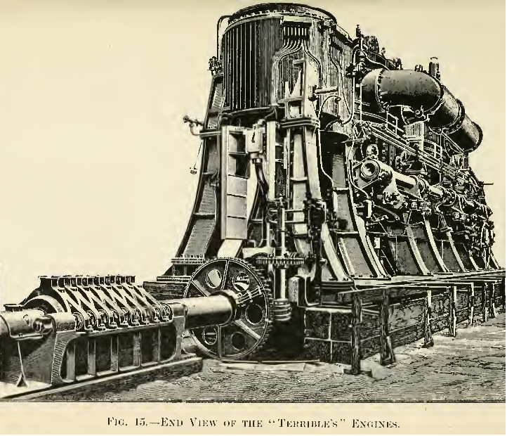

Digitix08's Testsite |
|
| Home | Search Login Games Articole parinti Pastila tehnică |
|
Postarea 4 / 6 Feb Termenul de inginer a fost preluat în limba română din celelalte limbi europene. Se pare că acesta provine din latinul ingeniare care înseamnă a inventa, a concepe. Cel mai probabil, acesta a apărut în forma în care îl cunoaștem azi in perioada revoluției industriale din Anglia, fiind asociat cu cei care concepeau primele motoare cu aburi. La vremea aceea trebuie sa spunem că un motor era o uzină in sine putând avea dimensiunile unei case. Este interesant că engineer a fost asociat cu engine și nu alte mecanisme complicate cum ar fi sistemele de scripeți sau cele ale ceasurilor. Că tot veni vorba de importul cuvintelor, în cultura tehnică engleză se face diferența între engine și motor. Dacă primul presupune un sistem complex, de mari dimensiuni, cel de-al doilea se folosește pentru soluții simple, compacte. Din acest motiv folosim internal combustion engine respectiv electric motor, dar niciodată viceversa. https://images.app.goo.gl/kzjJ9QTENDajry5i8  |
|